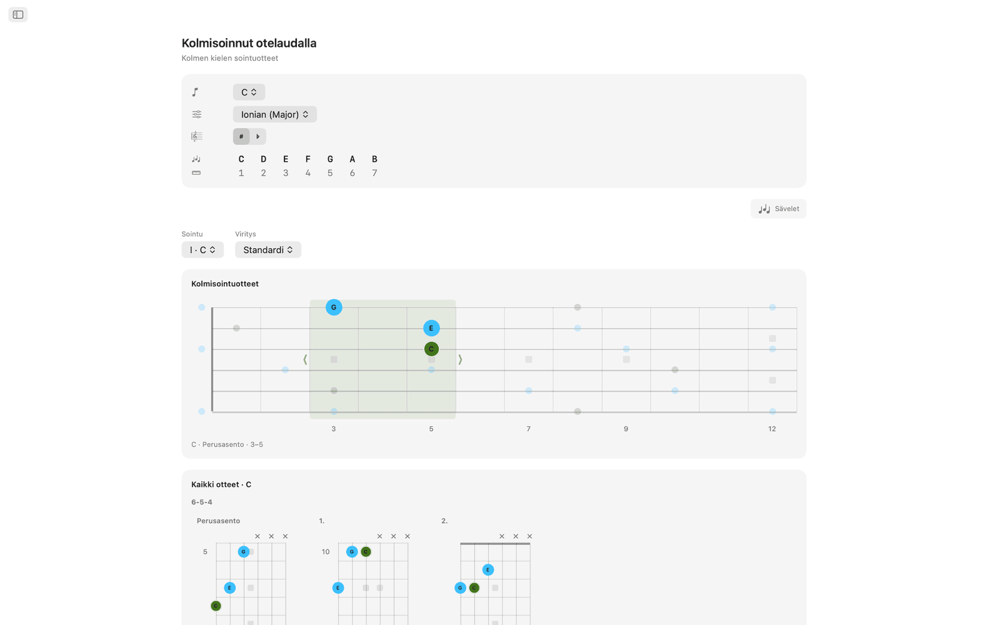
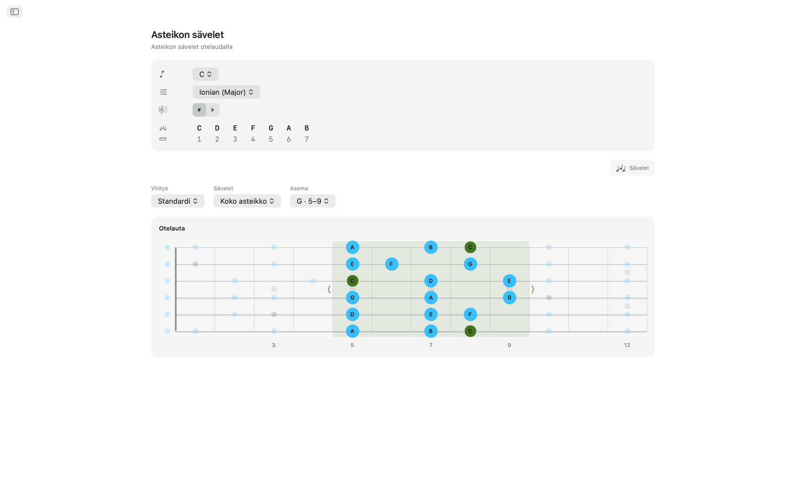
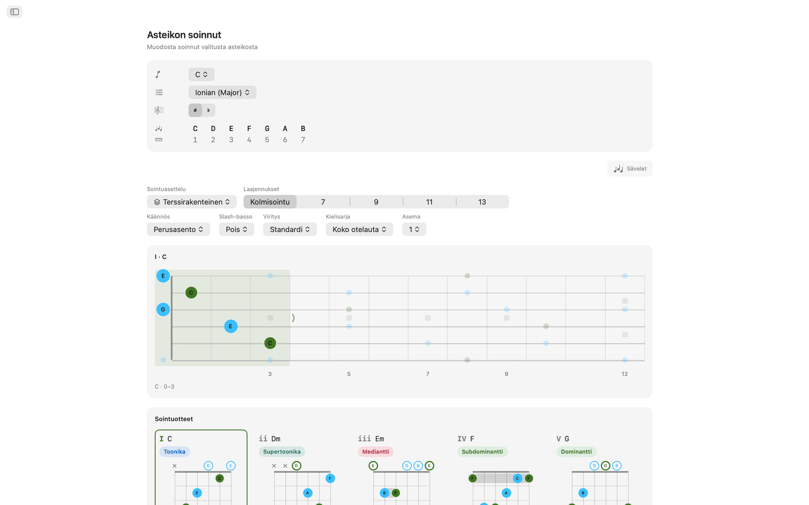
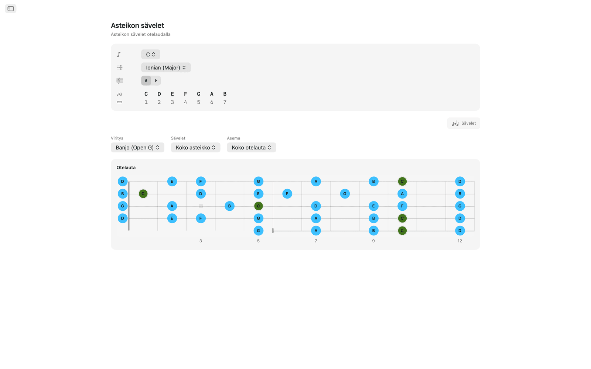
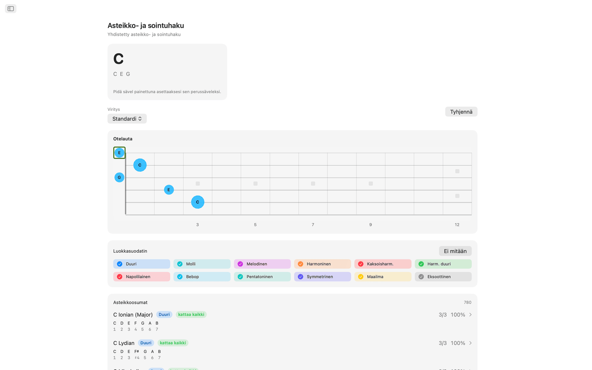
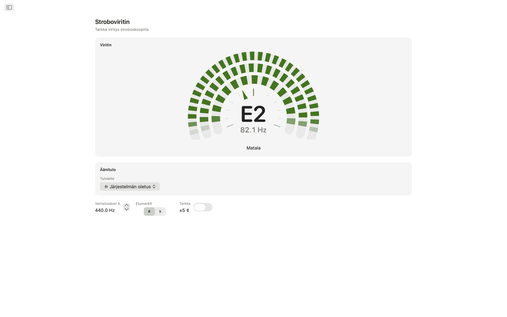
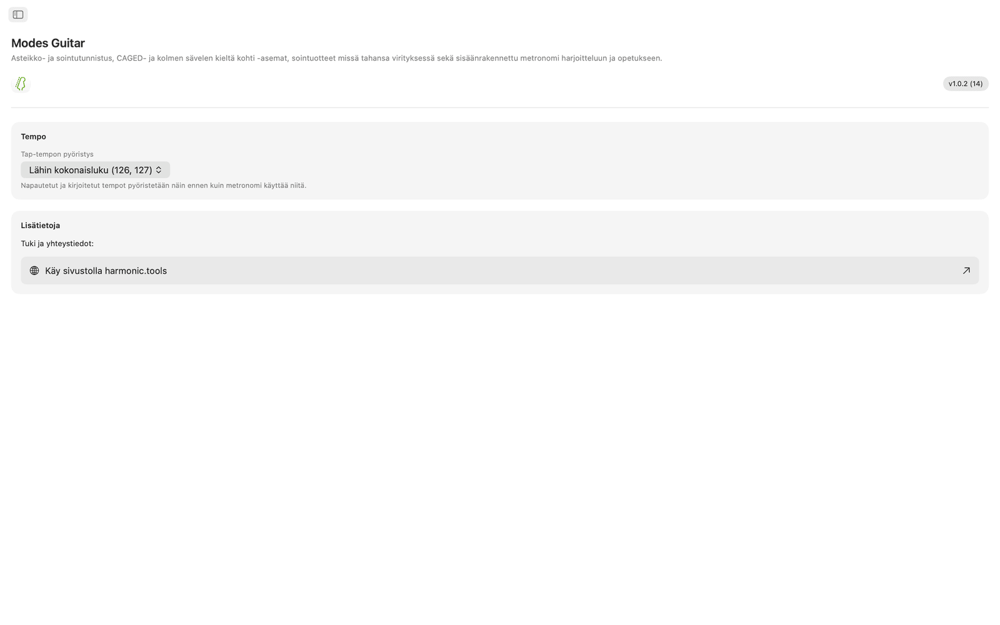

Modes Guitar macOS:lle
Modes Guitar on otelautasovellus Macille. Napsauta sormittamasi sävelet, niin näet, mitä soitat. Levitä mikä tahansa asteikko CAGED-asemiin tai kolme säveltä kieltä kohti -asemiin, selaa soitettavia sointuotteita missä tahansa virityksessä ja harjoittele sisäänrakennetun metronomin kanssa. Se on sivupalkillinen sovellus, joten sen voi pitää DAW-ohjelman tai oppituntisuunnitelman vieressä.
- Asteikko- ja sointuhaku suoraan otelaudalla
- CAGED- ja kolme säveltä kieltä kohti -asemat
- Soitettavat sointuotteet missä tahansa virityksessä
- 20 viritystä sekä oma viritys
- Stroboviritin, jossa äänikortin ja tulokanavan valinta
- Harjoitusmetronomi ja Ilmoituskeskuksen widgetit
Näyttökuvat
Mukana on vaaleat ja tummat näyttökuvat, jotka seuraavat verkkosivuston teemaa.









Ominaisuudet
- Napsauta otelaudalle painamasi sävelet, niin Modes Guitar nimeää soinnun reaaliajassa (duuri, molli, vähennetty, ylennetty, laajennettu, suspendoitu ja muut) ja järjestää kaikki sopivat asteikot sen mukaan, kuinka suuren osan sävelistä ne kattavat. Rajaa listaa asteikkoperheen mukaan ja siirry sitten suoraan kyseisen asteikon sointuihin.
- Valitse perussävel ja asteikko, niin kaikki asteikon sävelet syttyvät otelaudalle. Vaihda CAGED-asemiin tai kolme säveltä kieltä kohti -kuvioihin, vedä laatikkoa ylös ja alas otelautaa vaihtaaksesi asemaa ja rajaa sävelet kolmisointuun, septimisointuun, pentatoniseen asteikkoon tai koko asteikkoon.
- Asteikon jokaiselle asteelle saat soitettavia sointuotteita, joissa on avo- ja mykistettyjen kielten merkinnät, barre-merkinnät ja nauhanumerot silloin, kun ote on ylempänä otelaudalla. Selaa asemia otelaudan pituudelta, valitse käännös tai pakota mikä tahansa asteikon sävel bassoon slash-sointuja varten.
- Minkä tahansa sävellajin soinnun voi purkaa osiin ja koota uudelleen otelaudalla. Jokainen tiivis sointuasettelu esitetään kaaviotaulukkona kielisarjoittain ryhmiteltynä perusasennossa, ensimmäisessä käännöksessä ja toisessa käännöksessä. Valitse yksi, niin se ilmestyy otelaudalle ja muut sointusävelet näkyvät ympärillä, ja voit vetää kuvion ylemmäs soittaaksesi saman otteen kaikissa asemissa.
- Viritystä on 20: Standardi, Drop D, Drop C, Eb-standardi, DADGAD, Open G, Open D, 7-kielinen, baritoni, neli- ja viisikielinen basso, ukulele, banjo (viisikielinen, tenori ja plektra) ja mandoliini. Otteet, sormitukset ja sävelten nimet lasketaan uudelleen valitsemasi virityksen mukaan, ja uudelleenvirityksessä sormitus säilyy, joten kuulet, miksi sama kuvio muuttuu. Omaa viritystä varten valitset kolmesta kahdeksaan kieltä ja viritset jokaisen korvakuulolta, aloittaen mistä tahansa esiasetuksesta.
- Viritin on stroboskooppinen. Soita kieli, niin kolme segmenttirengasta liikkuu yhteen suuntaan, kun olet matala, ja toiseen, kun olet korkea, ja pysähtyy paikalleen heti, kun osut oikeaan korkeuteen, mikä näyttää paljon hienompia eroja kuin neula. Viritin on täysin kromaattinen: se nimeää minkä tahansa soittamasi sävelen, avokielen tai painetun, missä tahansa virityksessä, ja kitara, basso, ukulele, banjo tai mandoliini viritetään samalta kiekolta. Vertailusävelen A voi asettaa mihin tahansa 415 ja 466 Hz:n väliltä, Hienoasteikon voi ottaa käyttöön, jolloin lukema tarkentuu kymmenesosaan senttiä, ja ylennys- ja alennusmerkit voi näyttää kumpana tahansa. Macilla valitset myös äänikortin ja tulokanavan, jota viritin kuuntelee, joten äänikorttiin kytketty kitara viritetään suoraan liitännästä. Kaikki analysoidaan laitteella, eikä mitään tallenneta.
- Harjoitusmetronomissa on tahtilajit, alajaot, swing, iskukohtaiset aksentit, neljä naksuääntä, säädettävä äänenvoimakkuus ja haptiikka sekä pikatempot ja tallennetut esiasetukset harjoiteltaville kohdille.
- Pidä metronomi Ilmoituskeskuksessa ja käynnistä tai pysäytä se vaihtamatta sovellusta. Saat myös joka päivä uuden Päivän asteikon ja Päivän soinnun harjoiteltavaksi.
Macilla
- Toimii kokonaan laitteella: ei tiliä, ei mainoksia, ei seurantaa
- Internetyhteyttä ei tarvita
- Vaalea ja tumma ulkoasu kaikkialla
- Sivupalkillinen sovellus, jonka voi pitää DAW-ohjelman tai oppituntisuunnitelman vieressä
- Käännetty 22 kielelle
Saavutettavuus
Toimii VoiceOverin ja Puheohjauksen kanssa, ja sitä voi käyttää näppäimistöllä nuolinäppäimillä ja välilyönnillä.
Modes Guitar on ilmainen 7 päivän ajan. Kokeilun jälkeen täysi käyttöoikeus ostetaan kertamaksulla, ei tilausta.
Otelaudan ja virityksen viitetiedot
Sovelluksen virityksien, asemien, sointutyökalujen, virittimen ja metronomin ominaisuuksien viitetiedot.
Virityksiä
Otteet, sormitukset ja sävelten nimet lasketaan uudelleen valitsemasi virityksen mukaan. Uudelleenvirityksessä sormitus säilyy, joten kuulet, miksi sama kuvio muuttuu. Sävelet on lueteltu alimmasta kielestä ylimpään.
| Viritys | Sävelet (matala → korkea) | Kielet |
|---|---|---|
| Standardi | E A D G B E | 6 |
| Drop D | D A D G B E | 6 |
| Drop C | C G C F A D | 6 |
| E♭-standardi | E♭ A♭ D♭ G♭ B♭ E♭ | 6 |
| DADGAD | D A D G A D | 6 |
| Open G | D G D G B D | 6 |
| Open D | D A D F♯ A D | 6 |
| 7-kielinen | B E A D G B E | 7 |
| Baritoni | B E A D F♯ B | 6 |
| Basso (4-kielinen) | E A D G | 4 |
| Basso (5-kielinen) | B E A D G | 5 |
| Ukulele | G C E A | 4 |
| Banjo (Open G) | G D G B D | 5 |
| Banjo (Double C) | G C G C D | 5 |
| Banjo (Sawmill) | G D G C D | 5 |
| Banjo (Open D) | F♯ D F♯ A D | 5 |
| Banjo (tenori) | C G D A | 4 |
| Banjo (irlantilainen tenori) | G D A E | 4 |
| Banjo (plektra) | C G B D | 4 |
| Mandoliini | G D A E | 4 |
Voit myös rakentaa oman virityksen: valitse kolmesta kahdeksaan kieltä ja viritä jokainen korvakuulolta, aloittaen mistä tahansa esiasetuksesta.
Otelaudan asemat
Levitä mikä tahansa asteikko otelaudalle ja muuta, kuinka suuren osan siitä näet. Vedä laatikkoa ylös ja alas otelautaa vaihtaaksesi asemaa.
Asemajärjestelmät
Sävelrajaukset
Sointuotteet
Asteikon jokaiselle asteelle saat soitettavia otteita nykyisessä virityksessä.
- Soitettavissa otteissa on avo- ja mykistettyjen kielten merkinnät, barre-merkinnät ja nauhanumerot silloin, kun ote on ylempänä otelaudalla.
- Voit selata otteita otelaudan pituudelta.
- Käännösten avulla valitset, mikä sointusävel on bassossa.
- Slash-sointuja varten voit pakottaa minkä tahansa asteikon sävelen bassoon.
Kolmisoinnut otelaudalla
Pura mikä tahansa sävellajin sointu osiin ja kokoa se uudelleen otelaudalla.
Stroboviritin
Stroboskooppinen viritin mille tahansa soittimelle missä tahansa virityksessä. Analysoidaan laitteella, ei koskaan tallenneta.
Harjoitusmetronomi
Täysi metronomi harjoiteltaviin kohtiin.
Widgetit
Pääset metronomiin, Päivän asteikkoon ja Päivän sointuun vaihtamatta sovellusta.